채널: 레디포그로스 (Ready For Growth) | 길이: 43:46 | 날짜: 2026-01-16
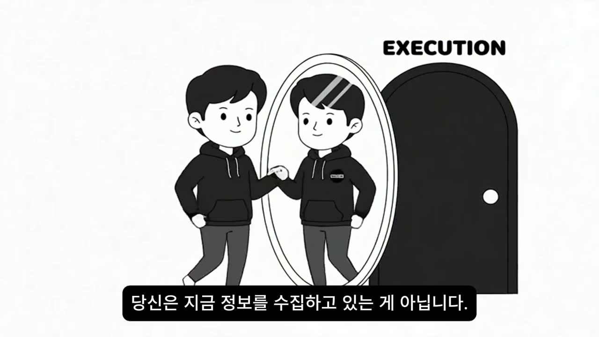
도입은 시청자에게 직접 질문을 던지는 방식입니다. “나중에 볼 영상”, 북마크, 노션/에버노트 클립이 몇 개인지 묻고, 하버드 비즈니스 스쿨 2024 연구라고 소개된 수치(자기계발 콘텐츠 적극 소비층의 87%가 저장 정보의 5%도 실행하지 않음)를 제시해 문제를 정면으로 찌릅니다.
핵심 진단은 “당신은 정보를 모으는 게 아니라 실행에서 도망치는 중”이라는 문장으로 요약됩니다. 화면도 거울 앞 캐릭터와 EXECUTION 문을 배치해 ‘실행을 마주보지만 문턱에서 멈춘 상태’를 시각화합니다.
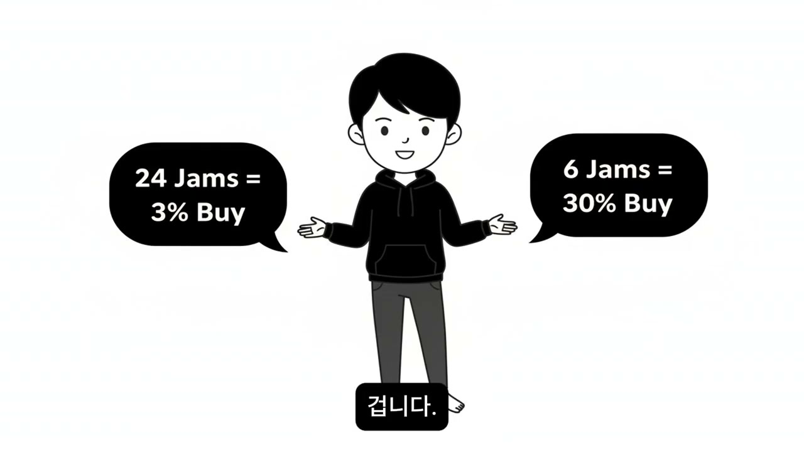
콜롬비아대 시나 아이엔가(자막 표기) 잼 실험을 통해 선택 과부하를 설명합니다. 24종 진열군 구매율 3%, 6종 진열군 구매율 30%라는 대비를 제시하며 “선택지가 4배인데 구매는 1/10”이라는 역설을 강조합니다.
스크린샷에는 24 Jams = 3% Buy, 6 Jams = 30% Buy가 직접 표기되어 실험의 수치가 장면 중심 메시지임이 분명합니다. 내레이션은 베리 슈워츠의 ‘선택의 역설’을 호출해, 더 알아보는 행위가 종종 더 나은 결정이 아니라 ‘결정 연기’로 이어진다고 연결합니다.
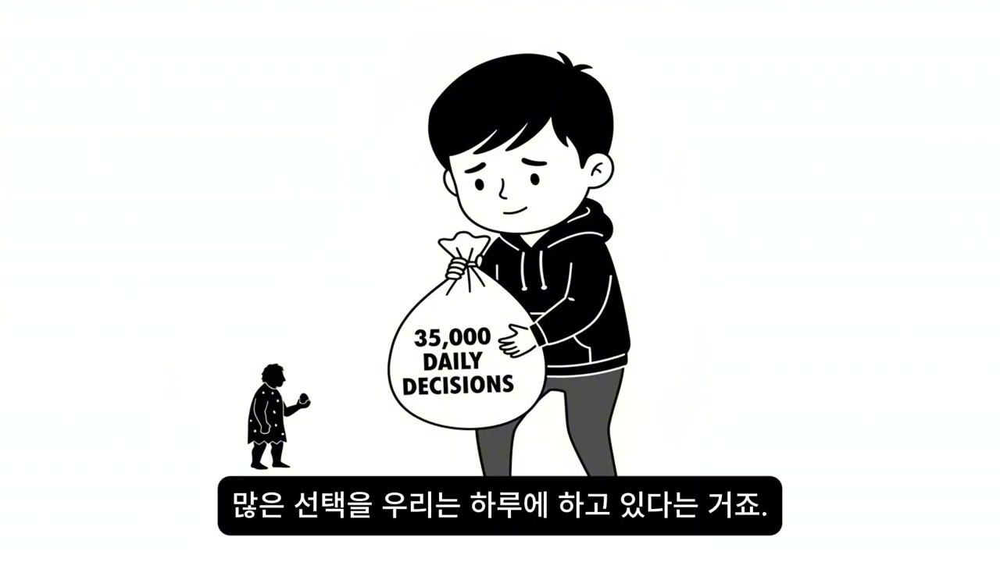
정보 환경의 변화가 제시됩니다. 2026년 기준 유튜브 분당 500시간 업로드, 생성형 AI의 즉시 다중 답변, 아마존의 대규모 도서·온라인 코스 생태계를 언급하며 “정보를 찾는 시대가 아니라 정보에 익사하는 시대”라고 규정합니다.
여기서 신경과학자 레비틴(자막 표기) 연구를 들어 현대인이 하루 평균 35,000번 결정을 내린다고 설명하고, 이것이 전전두엽 에너지 고갈로 이어져 결정 피로를 만든다고 말합니다. 화면의 35,000 DAILY DECISIONS 자루 이미지는 ‘하루 의사결정 부담의 무게’를 직관적으로 전달합니다.
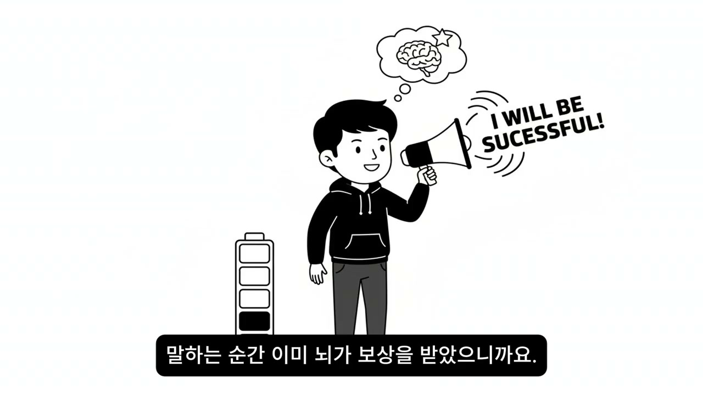
이 구간은 ‘가짜 진전’ 메커니즘입니다. 책을 사는 순간 읽은 느낌, 강의를 결제하는 순간 성장한 느낌이 드는 현상을 목표 대체 효과로 설명합니다.
뉴욕대 피터 고리처(자막 표기) 연구로 “목표를 말한 사람의 달성률이 33% 낮았다”는 수치를 제시하며, 말하기/저장/메모가 이미 보상을 줘서 실제 행동 동기를 떨어뜨린다고 논증합니다. 화면은 FEAR OF FAILURE, PERFECT TIMING 같은 문구를 함께 보여 ‘실패 공포+완벽 타이밍 대기’가 실행 지연의 정서적 핵심임을 시각화합니다.
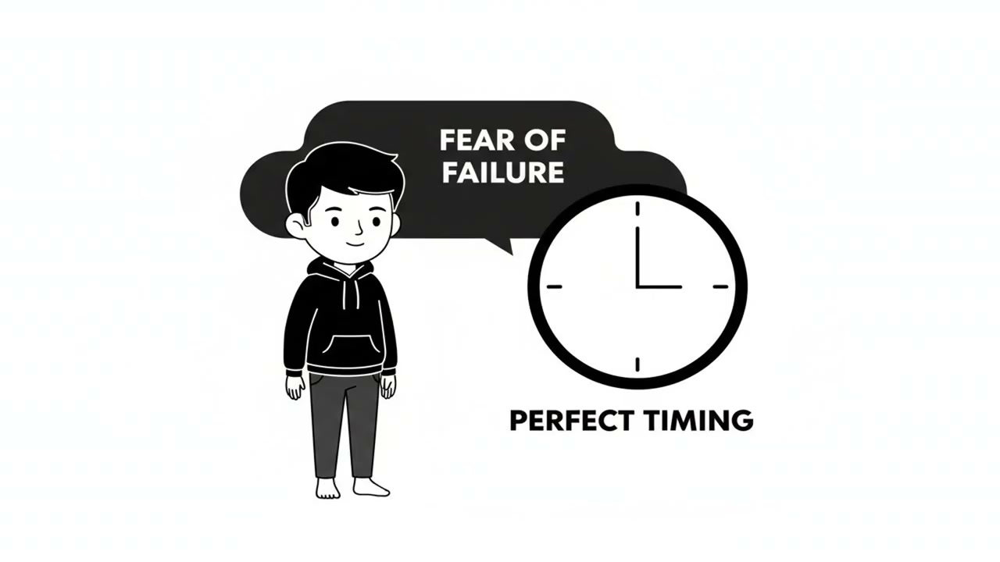
영상은 ‘productive procrastination(생산적 해피/지연)’이라는 표현으로 문제를 명명합니다. MIT 슬론 연구팀 fMRI 결과를 인용해, 정보 수집 시 활성 영역과 불안 회피 시 활성 영역이 거의 동일했다는 주장으로 “정보 수집은 불안 회피 메커니즘으로 작동할 수 있다”고 말합니다.
자막의 요지는 “완벽한 정보·계획·타이밍을 기다리는 동안 실행은 영원히 미뤄진다”입니다. 화면의 배터리 이미지와 확성기(I WILL BE SUCCESSFUL!)는 동기 고취 발화 자체가 보상처럼 작동해 행동 없이 만족을 주는 상황을 비유합니다.
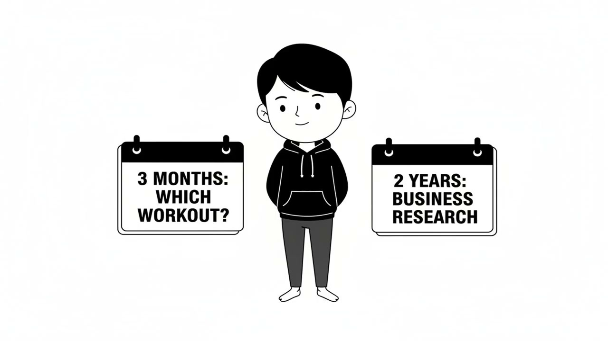
카너먼의 시스템1/시스템2 틀을 가져와, 현대사회가 모든 결정을 시스템2(느리고 분석적, 고에너지)로 하라고 요구한다고 비판합니다. 그래서 사람은 분석만 하다가 결정하지 못하게 된다는 결론으로 이어집니다.
이어 리처드 탈러의 넛지 이론과 BJ 포그(자막 표기)의 행동변화 원리를 묶어, 문제는 동기 부족도 능력 부족도 아니라 ‘촉발 요인(지금 당장 할 수 있는 첫 행동)’ 부재라고 정리합니다. 화면의 80% 진행바와 START 버튼은 “완벽 전 시작” 원칙을 시각적으로 고정합니다.
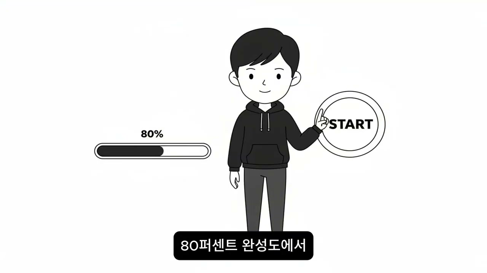
MBTI 프레임으로 유형별 함정을 구분합니다. INTP는 완벽한 논리 체계 구축 집착으로 “영원한 설계 상태”에 빠지고, INFP는 의미·가치 정합성을 끝없이 검증하다 시작 자체를 못 한다고 설명합니다.
처방은 각각 다릅니다. INTP에는 “80% 완성도 시작, 나머지 20%는 실행 중 보완”, INFP에는 “의미는 실행 속에서 발견된다”가 제시됩니다. 화면의 3 MONTHS: WHICH WORKOUT?, 2 YEARS: BUSINESS RESEARCH 문구는 과도한 사전탐색의 시간을 압축적으로 보여줍니다.
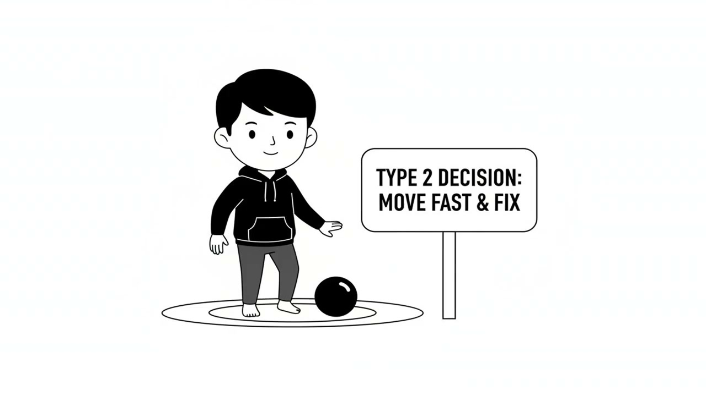
INTJ와 ENFP 함정이 이어집니다. INTJ는 최적화 강박으로 데이터 수집을 끝없이 하고, ENFP는 가능성 흥분으로 선택을 못 한 채 아이디어 순회만 반복한다고 진단합니다.
INTJ 처방은 “최적화는 반복에서 나온다(첫 시도가 최적일 수 없음)”, ENFP 처방은 “제약이 필요하다(한 달 하나만)”입니다. 화면에는 WATCH LATER, NOTION PAGES 등의 라벨이 폴더를 둘러싸고 있어 “실행 대신 저장 시스템만 커지는 상태”를 정확히 시각화합니다.
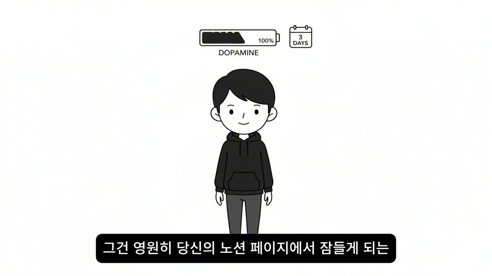
첫 번째 실행 시스템은 72시간 룰입니다. 예일대 종단 연구(자막 표기)로 “아이디어 접촉 후 72시간 내 구체 행동이 없으면 실행 확률 1% 미만”이라고 제시합니다.
신경화학 설명도 붙입니다. 새 정보의 도파민 흥분은 급감하며, 8시간 경과 시 절반, 72시간 시 거의 소멸한다고 말합니다. 화면의 TYPE 2 DECISION: MOVE FAST & FIX는 되돌릴 수 있는 결정을 빠르게 내리고 고치는 운영 원칙을 시각적으로 보강합니다.
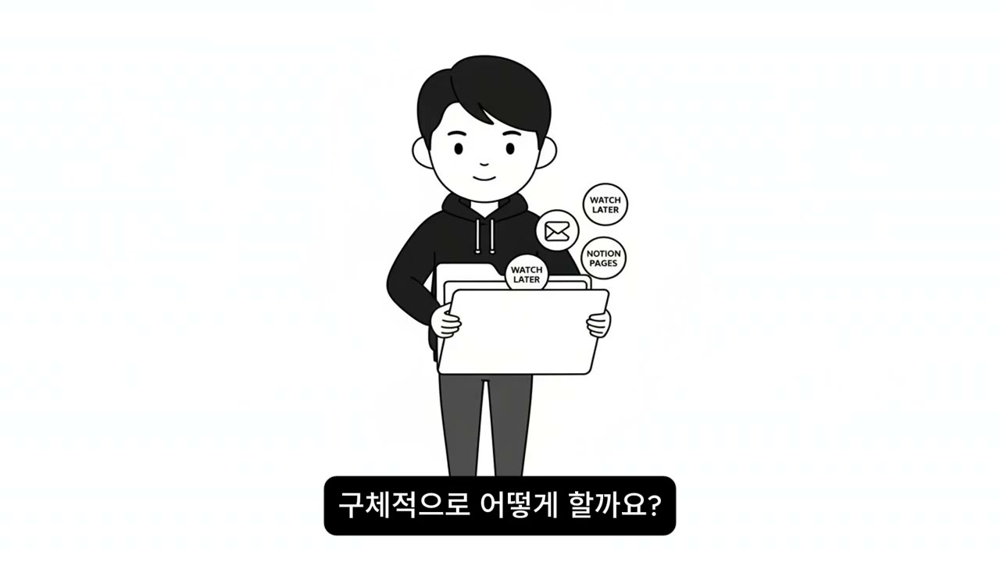
72시간을 넘긴 저장 항목은 “삭제 or 즉시 1행동”을 요구합니다. 삭제 이유는 두 가지로 제시됩니다: 미실행 정보가 인지 부하를 키운다는 점, 그리고 손실 회피를 이용해 실행을 강제할 수 있다는 점입니다.
영상은 실전 예시를 줍니다. 부동산 영상을 저장했다면 완벽 계획 대신 네이버 부동산 앱 설치 후 관심지역 1개 설정(약 2분). 화면의 DOPAMINE, 3 DAYS 아이콘은 시간 제한의 생물학적 근거를 상징합니다.
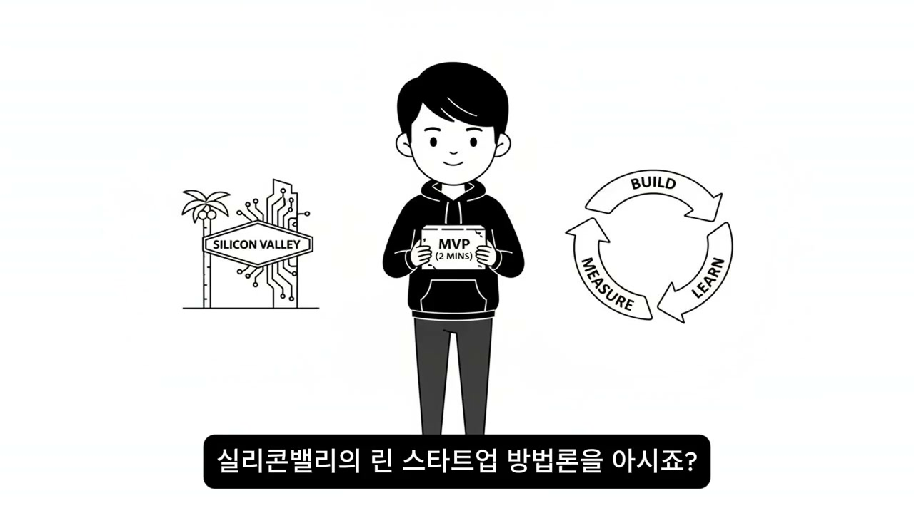
두 번째 시스템은 2분 프로토타입입니다. 정지 상태를 움직임 상태로 바꾸는 것이 핵심이며, 완벽 실행이 아니라 방향성 있는 첫 행동을 요구합니다.
운동이라면 계획표 대신 운동복 구매/헬스장 1통 전화, 유튜브라면 장비 기다리지 말고 스마트폰 30초 영상 업로드가 예시입니다. 화면은 SILICON VALLEY, MVP (2 MINS), BUILD-MEASURE-LEARN을 함께 보여 린 스타트업식 최소 실험을 강조합니다.
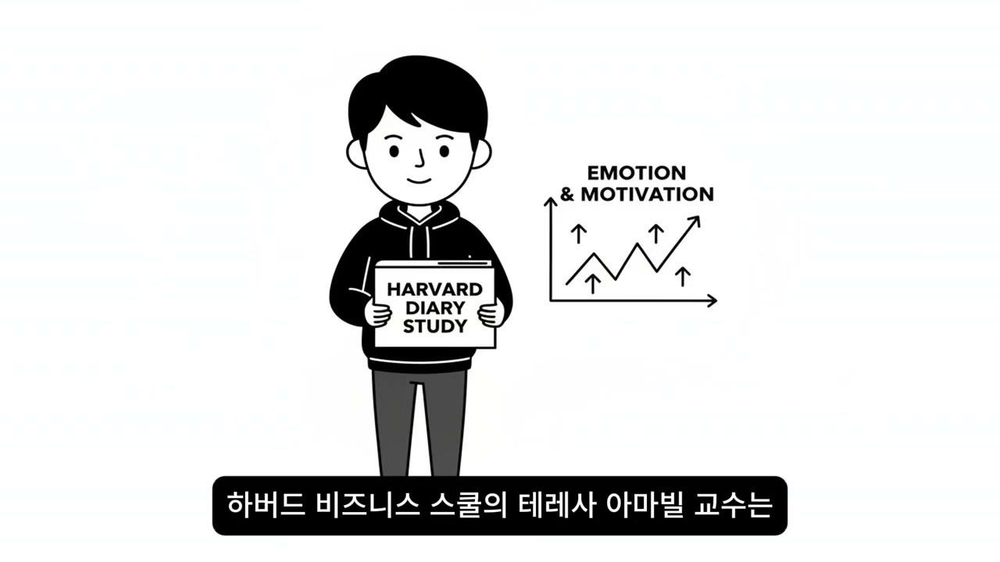
책 쓰기·창업 사례가 추가됩니다. 책은 200자 메모로 시작, 창업은 사업계획서보다 1명에게 실제 판매 시도부터 하라고 주문합니다.
왜 효과적인지 하버드 비즈니스 스쿨 테레사 아마빌의 다이어리 연구를 근거로 제시합니다. 동기와 행복감을 가장 크게 올리는 것은 거대한 성취가 아니라 작은 진전(small win)이라는 주장입니다. 화면의 HARVARD DIARY STUDY와 EMOTION & MOTIVATION 그래프가 이 논점을 직접 보여줍니다.
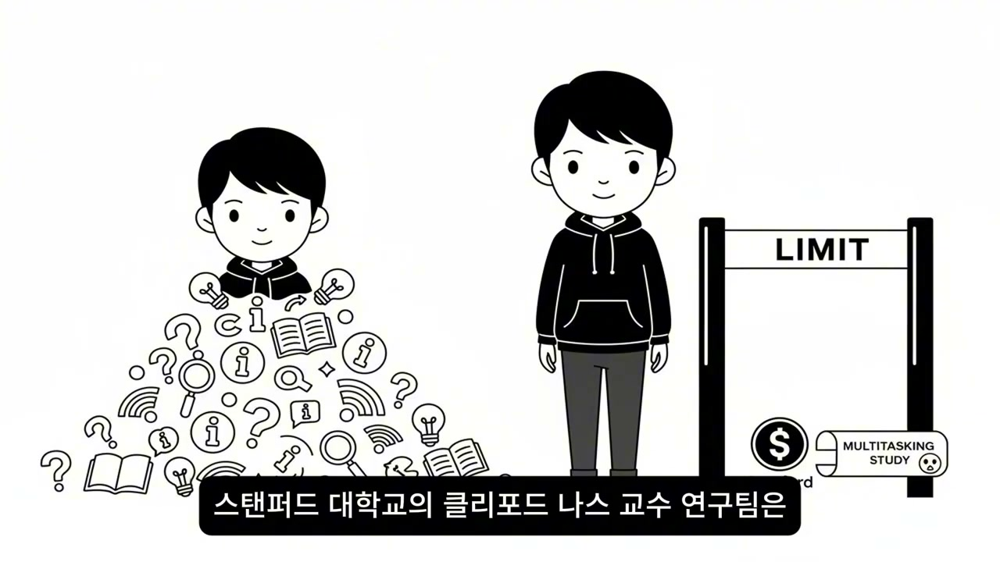
세 번째 시스템은 정보 다이어트입니다. 비만에 “더 먹기”가 처방이 아니듯 정보 과부하에도 “더 보기”는 해법이 아니라고 말합니다.
스탠퍼드 클리퍼드 나스 연구를 인용해, 정보 소비량이 많을수록 중요/비중요 구분력이 떨어진다는 결과를 제시합니다. 화면의 Phd EXERCISE PHYSIOLOGY vs LEMONADE OPEN 대비는 “박사급 지식보다 작은 실행”이 우선임을 직관적으로 보여줍니다.
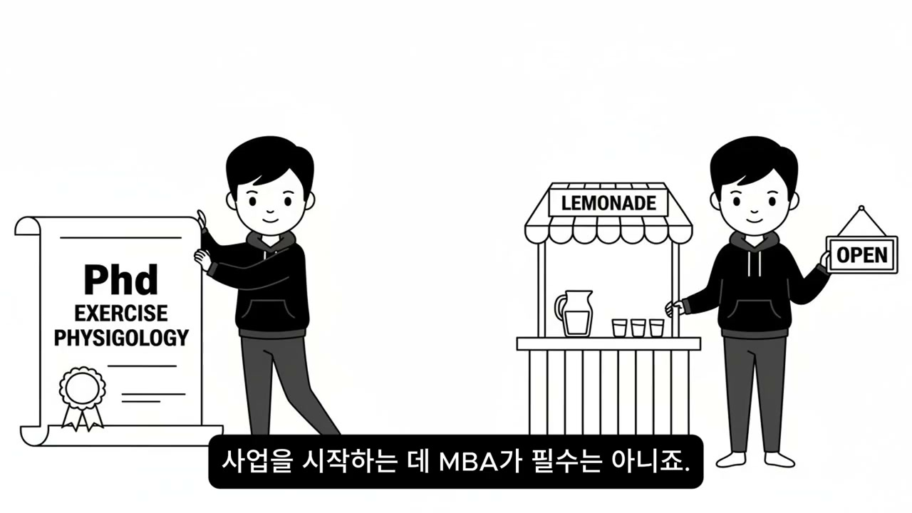
실행 전에는 다음 정보 소비를 막는 강한 룰을 제시합니다. 영상 하나를 실행할 때까지 다음 영상 금지, 책 한 권 끝낼 때까지 다음 책 구매 금지처럼 깊이를 강제합니다.
이어 네 번째 시스템인 데드라인 강제 설정으로 넘어갑니다. 파킨슨 법칙(일은 주어진 시간을 채운다)을 적용해, 조사·준비 마감일을 명확히 정하고 그 날짜가 되면 정보가 충분하지 않아도 시작하라고 말합니다. 화면의 3 SOURCES ONLY, 1 WEEK LIMIT은 제약값을 시각적으로 명시합니다.
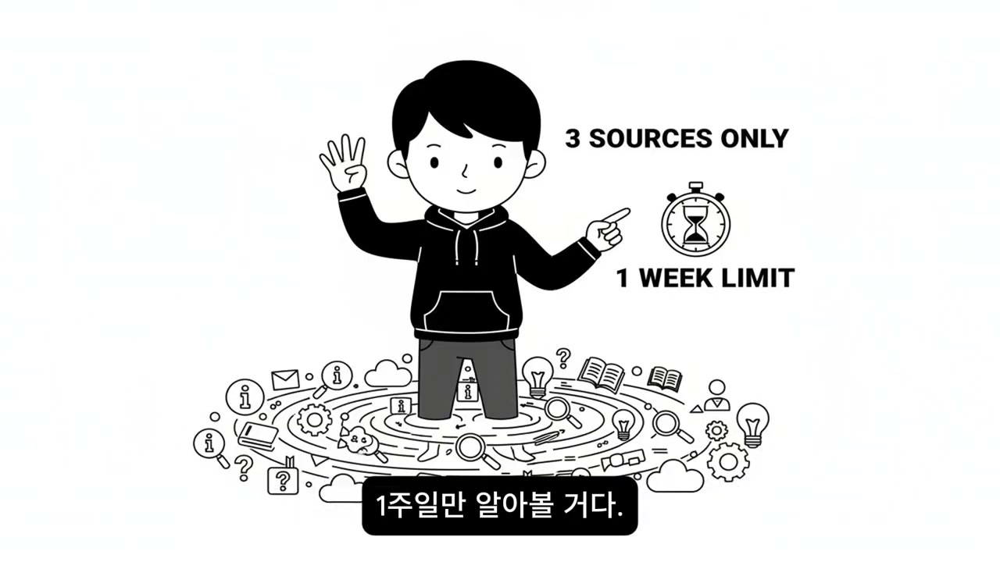
여기서 제약의 원리를 강화합니다. 제프 베조스의 투피자 룰(6~8명 규모)처럼, 정보에도 인원/자료/기간 제한을 걸어야 결정 속도가 나온다고 설명합니다.
또한 존스홉킨스 실험(자원 제한 그룹이 더 혁신적 솔루션) 이야기를 덧붙여 “제약→집중→창의성” 구조를 제시합니다. 화면의 REGULAR REPORT, I START TODAY!는 제약 뒤에 이어질 실천 보고 체계를 암시합니다.
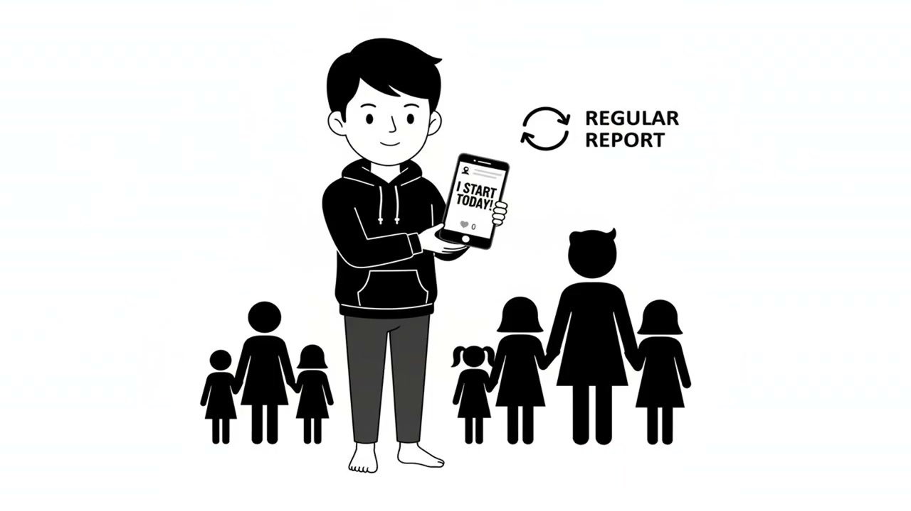
다섯 번째 시스템은 공개 선언 + 책임 파트너입니다. 시카고대 연구를 근거로, 공개 목표 선언과 책임 부여 집단의 달성률이 65% 높았다고 말합니다.
핵심은 보고 내용입니다. “얼마나 조사했는가”가 아니라 “무슨 행동을 했는가”를 주간 보고해야 하며, 필요하면 금전적 페널티(STK 앱, 목표 미달성 시 자동 출금)까지 걸라고 제안합니다. 이는 손실 회피 편향을 행동 엔진으로 전환하려는 설계입니다.
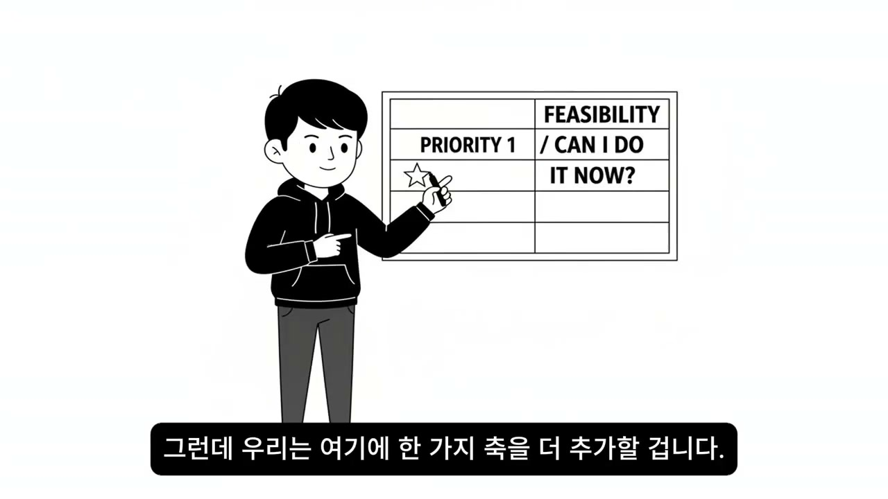
여섯 번째 시스템은 실행 우선순위 매트릭스입니다. 아이젠하워 매트릭스(긴급/중요)에 ‘실행 가능성(지금 당장 가능 여부)’ 축을 추가해, “중요+긴급+지금 가능” 항목만 1순위로 잡으라고 말합니다.
이 구간은 의지력의 한계도 강조합니다. 인간은 동시에 운동·사업·재테크·관계·독서·외국어를 모두 시작하면 전부 중도 포기하기 쉬우므로, 즉시 실행 가능한 하나만 선택하라는 메시지입니다. 화면 표에도 PRIORITY 1, FEASIBILITY / CAN I DO IT NOW?가 명시됩니다.
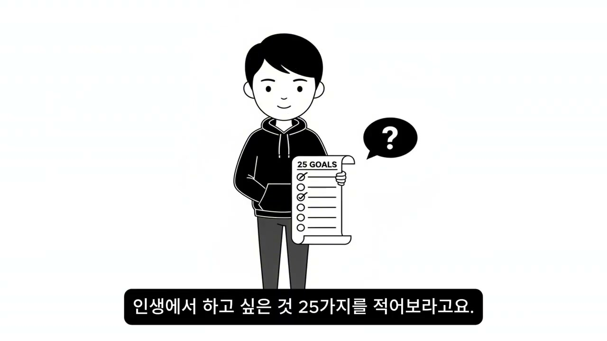
워런 버핏 25개 룰이 소개됩니다. 25개를 적고 상위 5개를 고른 뒤, 나머지 20개는 “여유시간용”이 아니라 절대 회피 목록으로 두라는 이야기입니다.
영상은 이를 정보 리스트에도 적용합니다. 중요한 것 하나만 남기고 나머지를 삭제해야 에너지가 분산되지 않습니다. 화면의 25 GOALS 스크롤은 바로 이 의사결정 장면을 상징합니다.
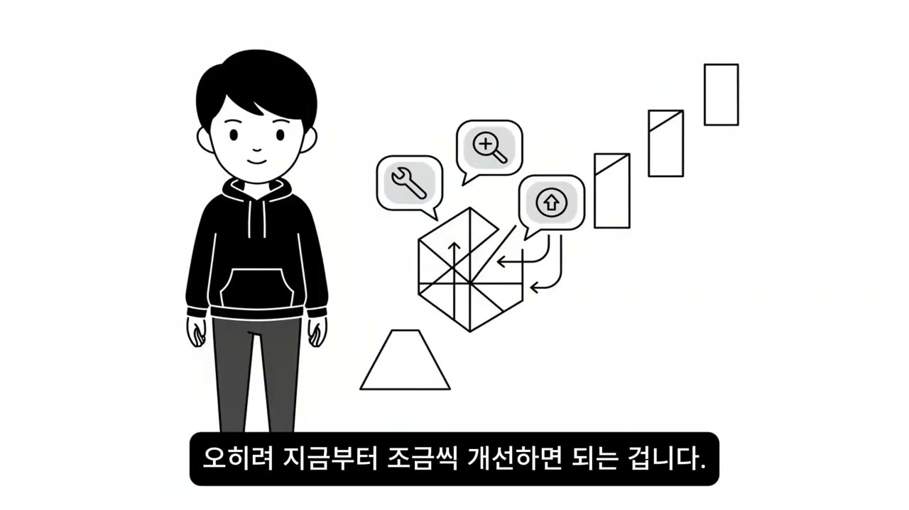
일곱 번째 시스템은 불완전 공개의 법칙입니다. 완성도 높아질 때까지 공개하지 않는 완벽주의를 정면으로 반박하고, 오히려 어설픈 상태로 먼저 공개하라고 권합니다.
효과는 두 가지입니다. 완벽주의 족쇄 해제, 그리고 실제 피드백 확보. 화면의 START (messy path) vs DON’T START (dead end) 대비는 “엉성한 시작이 무시작보다 압도적으로 낫다”는 결론을 직설적으로 보여줍니다.
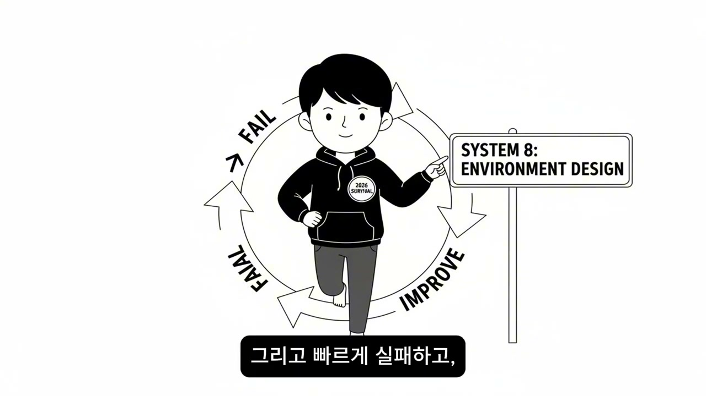
린 스타트업 사례로 인스타그램 전신 Burbn을 제시합니다. 초기에는 기능이 복잡했지만 사용자 데이터에서 사진 필터 사용이 압도적이어서 나머지 기능을 제거하고 사진 공유에 집중, 인스타그램이 탄생했다는 설명입니다.
핵심 문장은 “불완전하게 시작하고, 빠르게 실패하고, 빠르게 배우고, 빠르게 개선하라”입니다. 화면도 ACTION → LEARNING → SUCCESS → IMPROVEMENT 순환을 그려 실행-학습 루프의 작동 원리를 도식화합니다.
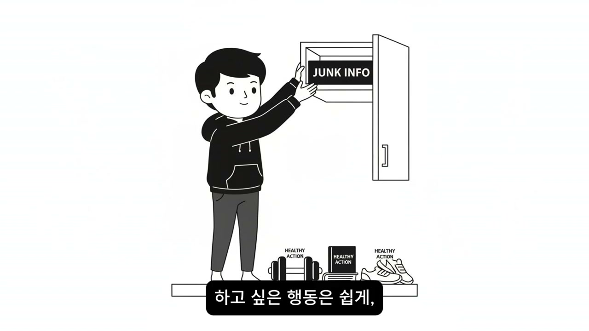
여덟 번째 시스템은 환경 설계입니다. 제임스 클리어의 “동기가 아니라 환경이 행동을 결정한다”는 원리를 적용해, 원하는 행동은 마찰을 낮추고 원치 않는 행동은 마찰을 높이라고 지시합니다.
예시가 매우 구체적입니다. 운동화는 현관 앞, 운동복은 잠옷 옆, 글쓰기는 PC 켜면 워드 자동 실행, 유튜브/SNS 바로가기는 제거. 화면의 큰/작은 INERTIA 공은 “초기 가속이 가장 어렵고, 일단 굴러가면 쉬워진다”는 물리 비유를 강화합니다.
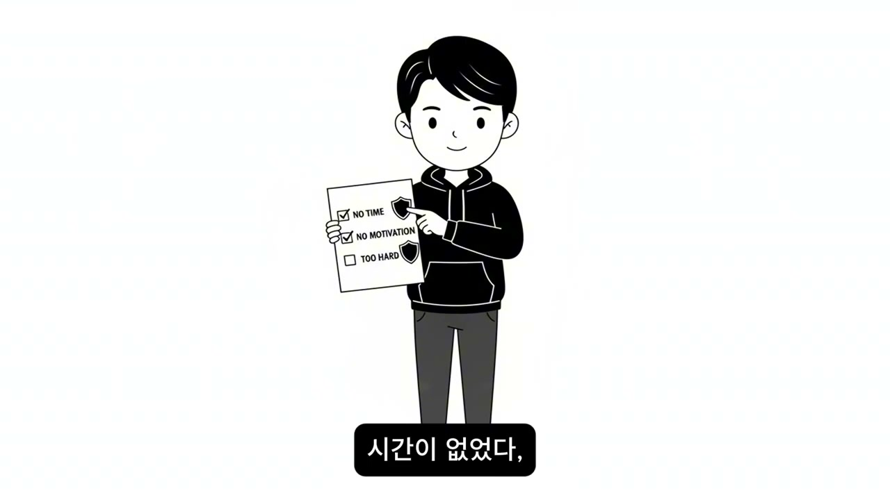
MIT 미디어랩 연구로 “행동 난이도 20% 감소 → 실행률 200% 증가”가 제시됩니다. 즉 능력·의지보다 마찰 관리가 우선이라는 주장입니다.
아홉 번째 시스템은 실패 사전 검토(프리모텀)입니다. 6개월 뒤 완전 실패를 가정하고 실패 이유(시간 부족, 우선순위 충돌, 동기 하락, 난이도 과다, 준비 미흡)를 미리 적은 뒤 대응책을 선제 설계하라고 말합니다. 화면 체크리스트의 NO TIME, NO MOTIVATION, TOO HARD는 프리모텀의 대표 실패요인을 시각적으로 고정합니다.
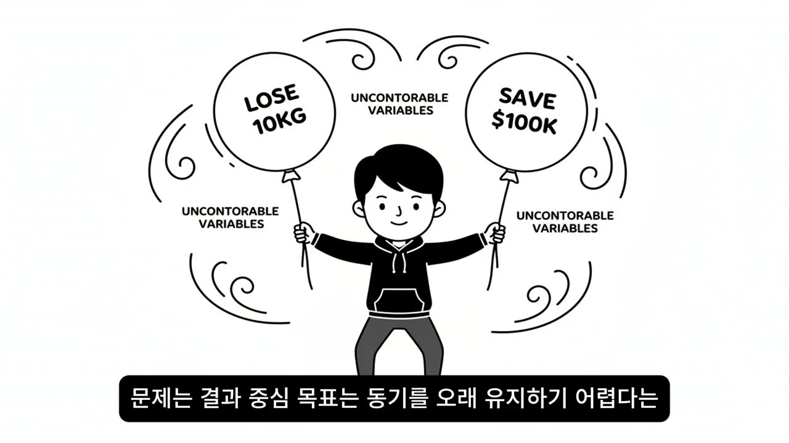
프리모텀의 효율성을 체크리스트 사례로 뒷받침합니다. 하버드 의대 수술 전 체크리스트 도입 후 실패율 47% 감소를 인용해, 사전 점검이 성과를 실질적으로 올린다고 주장합니다.
열 번째 시스템은 정체성 기반 실행입니다. 결과(예: 10kg 감량, 1억 모으기) 중심 목표는 통제 불가능 변수가 많아 동기 유지가 어렵고, 정체성 중심(건강한 사람, 재정적으로 자유로운 사람)으로 전환해야 지속 행동이 나온다고 설명합니다. 화면의 LOSE 10KG, SAVE $100K, UNCONTORABLE VARIABLES 풍선은 결과목표의 취약성을 상징합니다.
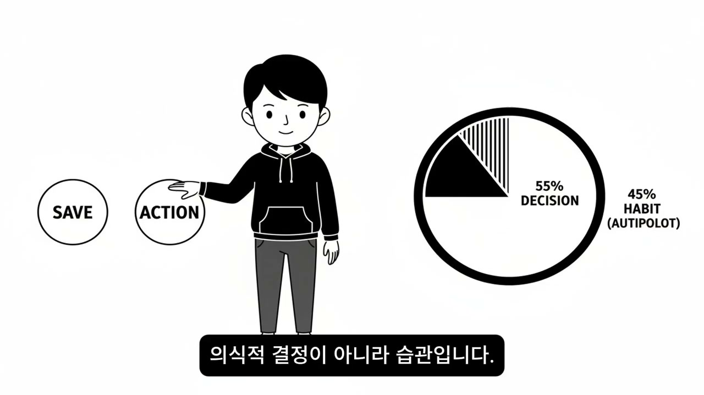
정체성 접근의 실전 문장으로 “나는 실행하는 사람이다”를 제시합니다. 새로운 정보를 접하면 ‘저장할까?’가 아니라 ‘실행하는 사람이라면 지금 뭘 할까?’를 자동 질문하게 만들라는 프레임입니다.
듀크대 연구(일상 행동의 45%는 의식적 결정이 아닌 습관)를 인용하며, 정체성을 바꾸면 행동 자동조종이 바뀐다고 연결합니다. 화면의 55% DECISION / 45% HABIT (AUTOPILOT) 파이차트는 이 구간의 핵심 수치를 시각적으로 고정합니다.
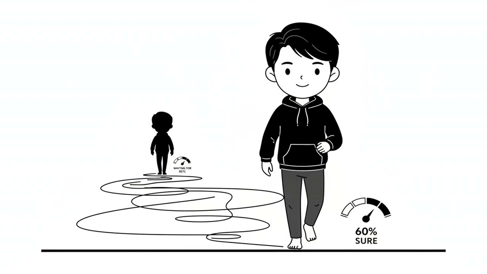
영상은 “완벽한 정보·준비·타이밍은 존재하지 않는다”를 결론 전제로 박습니다. 노스웨스턴대 20년 추적 연구(자막 표기)로 성공/실패 차이는 지능·학벌·자본이 아니라 불확실한 상태에서 시작하는 능력이라고 제시합니다.
수치 대비는 강력합니다. 성공한 사람은 60% 확신에서 시작, 실패한 사람은 95% 확신을 기다리다 기회를 잃음. 화면의 60% SURE 게이지와 멀리 있는 WAITING FOR 95% 실루엣이 메시지를 명확히 전달합니다.
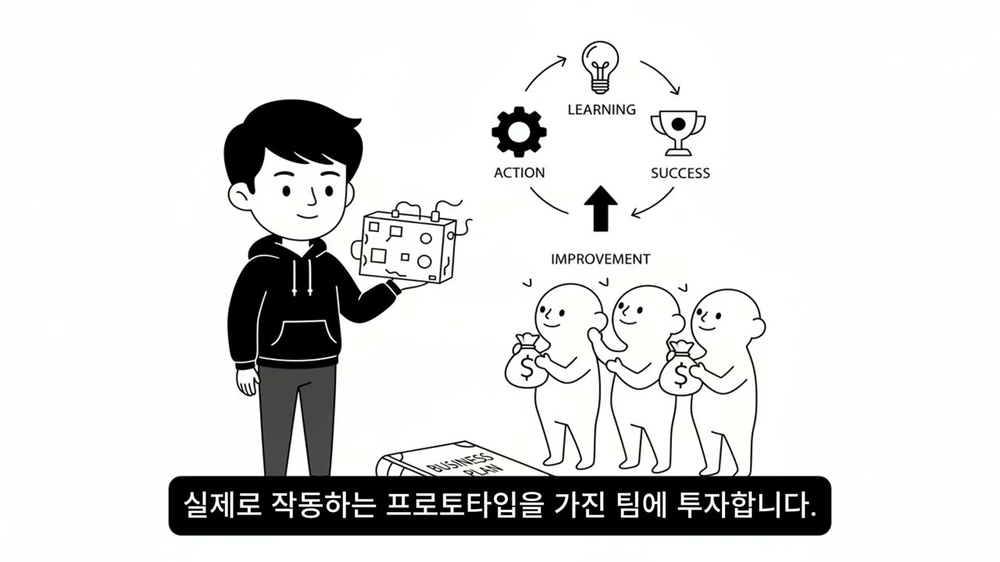
“아이디어는 싸고, 실행이 전부다”라는 실리콘밸리 문장을 중심으로, 실행 선점의 중요성을 강조합니다. 구글 전 CEO 에릭 슈미트 발언(좋은 아이디어가 아니라 좋은 실행에 돈을 준다)과 VC 투자 관점(완벽 계획서보다 작동 프로토타입 선호)을 들어 현실 논리를 강화합니다.
또한 계획의 취약성도 짚습니다. 노션에 있는 완벽 계획은 현실 변수 앞에서 대부분 틀리며, 틀린 계획을 계속 다듬는 것이 진짜 낭비라는 주장입니다. 화면의 START (messy path)/DON’T START 구도가 이 문장을 시각적으로 재확인합니다.
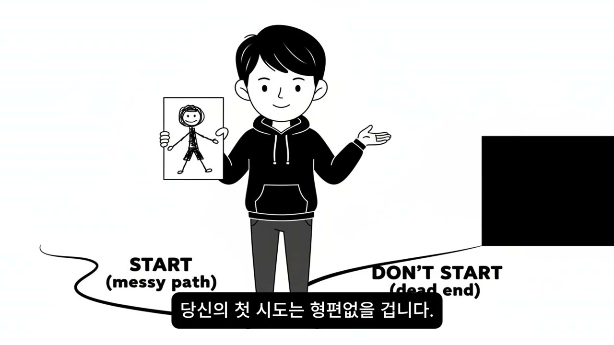
피터 틸의 “경쟁은 패배자를 위한 것” 문장을 활용해, 완벽 준비 경쟁이 아니라 선행 실행 학습으로 우위를 만들라고 말합니다. 아마존 초기 웹, 페이스북 초기 버그, 테슬라 초기 고장 사례를 들어 ‘먼저 출시 후 개선’ 패턴을 공통 전략으로 묘사합니다.
이 구간의 압박 메시지는 시간성입니다. 내가 3년 준비하는 동안 누군가는 불완전하게 시작해 3개월 뒤 앞서갈 수 있으며, 실전 데이터가 이론을 압도한다는 것입니다. 화면은 프로토타입-학습-개선-성공의 루프와 투자자 도식을 배치해 “실행이 자본과 기회를 끌어온다”는 내러티브를 강화합니다.
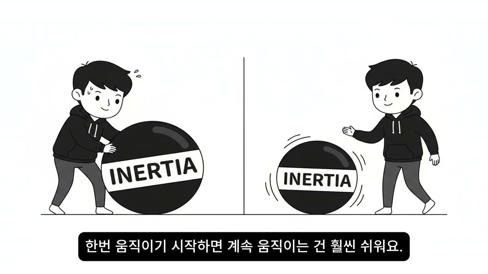
실행 지시가 시간 단위로 구체화됩니다. “오늘 저녁까지 딱 하나”, “2분 프로토타입”, “운동이면 팔굽혀펴기, 사업이면 1명에게 메시지, 글쓰기면 200자”처럼 즉시 행동 템플릿을 제공합니다.
또 다시 관성 법칙과 72시간 룰을 결합합니다. 이 영상을 본 후 3일 내 행동이 없으면 통찰은 증발하고, 다시 정보 수집 루프로 되돌아간다고 경고합니다. 화면의 INERTIA 공 비유는 정지→이동 전환의 에너지 비용을 반복 강조합니다.
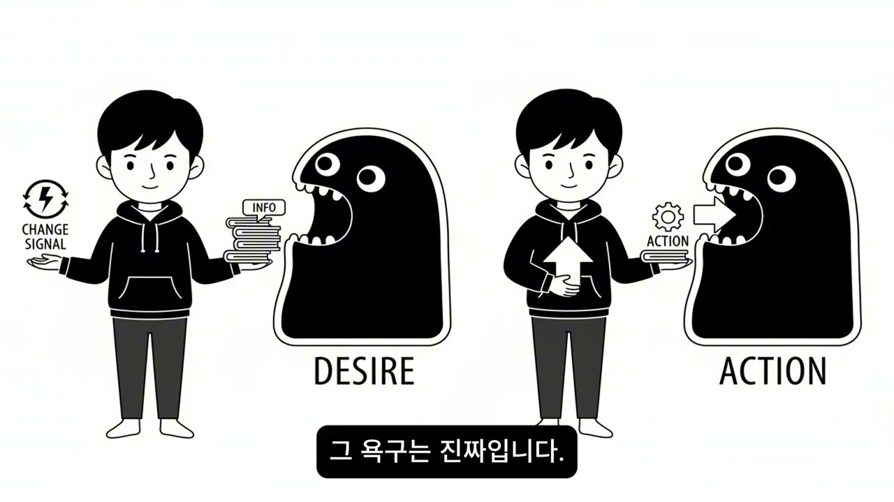
마지막 본문은 “용기는 행동 속에서만 자란다”는 정서적 메시지입니다. 불안정함, 실패 가능성, 어설퍼 보일 위험을 감수하는 능력은 사전 학습이 아니라 실행 경험에서 생긴다는 주장입니다.
정보 소비는 욕구를 일시적으로 진정시키는 환상일 뿐, 진짜 만족은 ‘작은 진전 체감’에서 나온다고 정리합니다. 화면의 DESIRE 괴물과 ACTION 전환 도식은 욕구를 정보가 아니라 행동으로 변환해야 함을 시각적으로 전달합니다.
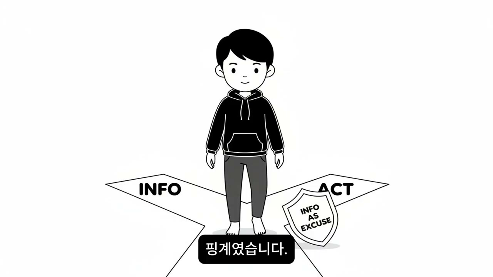
엔딩은 양자택일 프레임입니다. 지금 정보 수집을 멈추고 실행으로 넘어가는 사람과, 또 다른 영상을 찾아 떠나는 사람의 1년 후 삶은 완전히 달라질 것이라고 단언합니다.
결론 문장도 명확합니다. “정보는 무기가 아니라 핑계였다”, “성장은 저장 폴더가 아니라 실행 속에서 시작된다.” 화면의 갈림길(INFO vs ACT)과 INFO AS EXCUSE 방패는 이 메시지를 상징적으로 마무리합니다.
“당신은 지금 정보를 수집하고 있는 게 아닙니다. 실행으로부터 도망치고 있는 겁니다.”
“24가지 잼을 본 사람의 구매율은 3%, 6가지만 본 사람은 30%였습니다.”
“현대인은 하루 평균 35,000번의 결정을 내립니다.”
“책을 사는 순간 이미 읽은 것 같은 착각에 빠집니다.”
“목표를 말한 사람들의 달성률이 오히려 33% 낮았습니다.”
“문제는 동기가 아닙니다. 촉발 요인, 지금 당장 시작할 첫걸음이 없는 겁니다.”
“80% 완성도에서 일단 시작하세요.”
“혁신은 1,000가지를 하는 게 아니라 999가지에 NO라고 말하는 것입니다.”
“72시간 안에 행동하지 않으면 실행 확률은 1% 미만으로 떨어집니다.”
“완벽한 계획 대신 2분 프로토타입을 만드세요.”
“사람들의 동기와 행복감을 가장 크게 높이는 건 큰 성취가 아니라 작은 진전입니다.”
“정보의 양이 아니라 정보의 깊이가 행동 변화를 만듭니다.”
“공개 선언과 책임 부여를 한 사람의 목표 달성률은 65% 높았습니다.”
“사람들은 얻는 기쁨보다 잃는 고통을 2배 이상 강하게 느낍니다.”
“불완전한 상태로 공개하세요. 그게 전략입니다.”
“행동 난이도를 20%만 낮춰도 실행률은 200% 증가합니다.”
“일상 행동의 45%는 의식적 결정이 아니라 습관입니다.”
“성공한 사람은 60% 확신에서 시작했고, 실패한 사람은 95% 확신을 기다렸습니다.”
“Ideas are cheap, execution is everything.”
“정보는 이제 그만 모으세요. 부족한 건 정보가 아니라 용기입니다.”
이 영상은 분석 마비를 ‘의지 부족’ 문제가 아니라 뇌의 불확실성 회피 + 디지털 환경의 과잉 정보 공급 + 완벽주의 문화의 결합 문제로 해석합니다. 그래서 해결도 동기 자극이 아니라 행동 구조 설계로 접근합니다.
실용적으로 보면, 영상이 던지는 메시지는 세 줄로 압축됩니다.
향후 관점에서도 영상의 논지는 선명합니다. AI·플랫폼으로 정보는 계속 값싸지고 넘쳐날수록, 차별화는 ‘무엇을 아는가’가 아니라 ‘얼마나 빨리 시도하고, 실패에서 배우고, 다시 개선하는가’에서 나온다는 것입니다. 즉 2026년 이후 경쟁력의 핵심은 지식량이 아니라 실행 속도와 반복 학습 능력이라는 결론입니다.
댓글
GitHub 이슈 기반 댓글 시스템입니다.